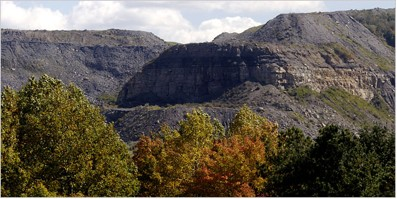
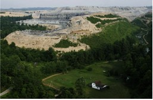
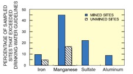
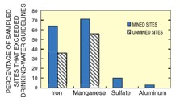

| METALS IN MEDICINE AND THE ENVIRONMENT | |||
| Metals | Mountain Top Removal | ||
|
People used to look at mountains and feel their invincibility - something stable that had lived through millions of years. However, in the past decades, these previously enduring and resilient mountains have become threatened by American companies, which, unhindered by the government, have reached a new level of seemingly never ending power. Introduction Mountaintop removal or mountaintop mining is a type of surface mining that has been used since the 1970s (1). The practice is occurring all over the Appalachian Mountains specifically in Kentucky, West Virginia, and parts of Virginia and Tennessee (2). First trees and plants are cleared out. Oftentimes, the trees are not even sold, but instead burned because the coal companies have only one mindset: get as much coal out using the least amount of money. Next the topsoil is removed. This topsoil, if saved, could be put on top of the mountain after the coal is removed, which would help forests recover, but again most of the time coal companies deem this as a waste of money (3). The companies then use explosives to blast the remaining rock and soil called overburden out of the way to get to the coal seams. Coal companies sometimes even remove more than 500 feet off the top of the mountain. The overburden is deposited in valleys covering mountain streams (1). Once the coal is removed, the area is leveled and “revegetated” (2). Typically only invasive grasses are planted, which does not constitute repairing the forest, but only further damages the ecosystem (3). Unless mountaintop removal is stopped, by 2012 a part of the beautiful Appalachian forest the size of Rhode Island will be demolished (4).  Legislation The Surface Mining Control and Reclamation Act of 1977 and the Clean Water Act are both responsible for controlling mountaintop removal (2). Unfortunately, these laws are not working to prevent the environment and human health from being compromised by such an invasive mining technique. Currently, environmental groups are attempting to prove that permits, which are given by the Army Corps of Engineers to coal companies allowing them to place mining debris into Valley streams, are against the Clean Water Act. Unfortunately, the Bush administration determined that “fill,” which according to the Clean Water Act is acceptable to place into streams, should include mining debris (6). Currently, a new rule, which only needs to be approved by the EPA, will make it even easier for coal companies to dump debris into streams. This rule would take away the Buffer Zone Rule of 1983, and make placing mining debris within 100 feet of a stream legal for coal companies (7). There is legislation called the Clean Water Protection Act that if passed would prevent mining debris from being considered “fill”, and make it illegal for mining debris to be dumped into valley streams (8). This legislation could prevent mountaintop removal from occurring because according to the National Mining Association coal companies have very little alternative other than to dump the waste into valleys (5).  Environmental and Health Impacts Mountaintop removal is not only an aesthetic issue, but also a distinct human health problem. The EPA states that there is an increase in zinc, selenium, sodium, and sulfate levels in streams because of mountaintop removal practices (2). Because blasting causes pyrite to be oxidized, which produces sulfuric acid as a byproduct, mountaintop removal causes rivers to become more acidic. This leads to the release of other heavy metals such as calcium, iron, and magnesium (3). As shown in Figure 3, iron, manganese, sulfate, and aluminum were all found by the EPA to be above safe levels for drinking-water in a greater proportion of streams near mined sites than for streams near unmined sites (9).  Surface mining causes a lot of sedimentation to enter into the river system. Destroying mountain streams causes water to be redirected to others streams, which leads to flooding and erosion. Since forests are no longer present to naturally purify water and prevent erosion, rivers are accumulating sediment. This sediment and the metals mentioned above are very expensive to filter out to get clean drinking water. Studies have indicated that some communities like Letcher County do not have access to clean drinking water, and children have a higher incidence of nausea, vomiting, and diarrhea. Without cleaner drinking water these citizens are more prone to cancer, liver failure and other diseases (3). As shown by Figure 4, groundwater is also contaminated by surface mining (9). Because a lot of people living in the Appalachian Mountains rely on well water as their sole source of drinking water this can be a very large problem. Many citizens have had to dig new wells because of contamination from coal companies (3).  Coal companies participating in surface mining are also continuing to use impoundment ponds to store slurry, which is a byproduct of cleaning coal and heavily contaminated with metals (3). In the past, there have been significant disasters when these ponds break. For example, in 2000 near Inez, Kentucky, one such pond broke releasing 250 million gallons of slurry into the river system (4). There are many cases like this one, and the government is doing very little to help the citizens cope with such disasters or prevent future ones from occurring. For instance, the EPA once told citizens after such a crisis that “there was nothing in the slurry that wasn’t on the periodic table” (3). Of course, although this is true, it seems to undermine the issue that slurry has immensely toxic chemicals that can be significantly harmful to human health such as cadmium, lead, arsenic, and mercury (3). There are safer ways to handle slurry such as dry press filter systems, but they are slightly more expensive so coal companies do not see the necessity in investing in them. Ways to Help
Resources U-tube Mountaintop removal video from iLoveMountains.org Lost Mountain by Erik Reece “When Mountains Move” from National Geographic References (2) Mid-Atlantic Mountaintop Mining. 21 Oct 2008. U.S. Environmental Protection Agency. 26 Oct 2008. (3) Reece, Erik. Lost Mountain: A Year in the Vanishing Wilderness, Radical Strip Mining and the Devastation of Appalachia. New York: Riverhead Books, 2006. (4) Mitchel, John (photos by Melissa Farlow). “When Mountains Move: The quest for Appalachian coal has lead to mountaintop removal, a process that’s been called strip mining on steroids.” National Geographic. March 2006. (5) Broder, John. “Rule to Expand Mountain Top Coal Mining.” New York Times. 23 Aug 2007. (6) Parker, Laura. “Mining Battle Marked by Peaks and Valleys.” USA Today. 19 Apr 2007. (8) “Mountaintop Removal Mining.” Wikipedia. 24 October 2008. Author: Rebecca Schwantes
|
|||
| Topics | |||
|
|||